Interior Painting
Home Office & Built-In Painting
Walls and built-ins refinished as one coordinated space
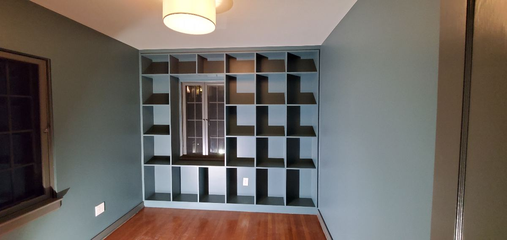
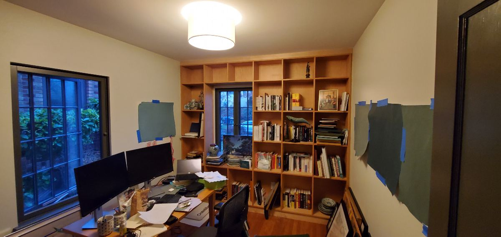
Detailed interior painting
Walls, ceilings, trim, fireplaces and architectural details documented before and after. Every slider shows the actual project transformation.
Walls and built-ins refinished as one coordinated space


Strong blue to a softer architectural palette
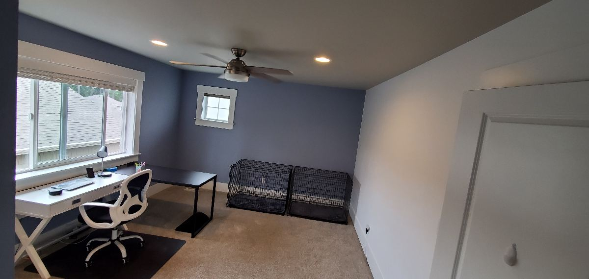
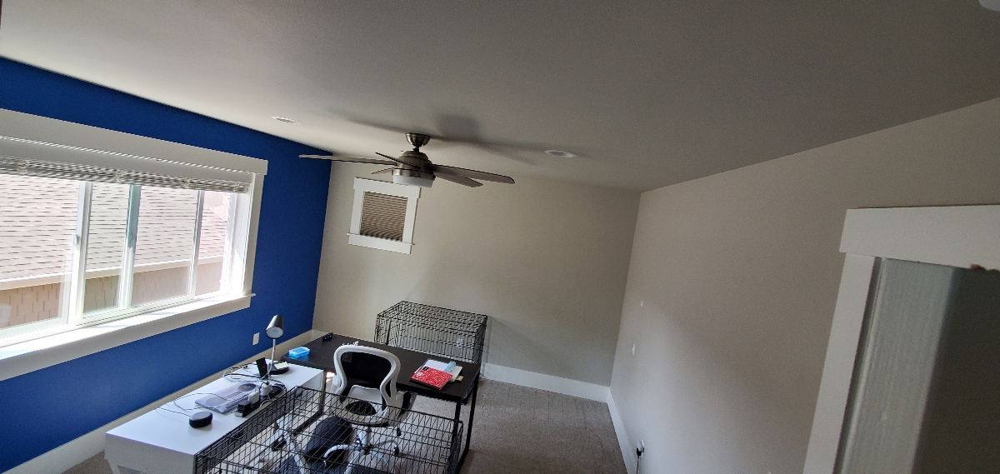
Open living space color transformation
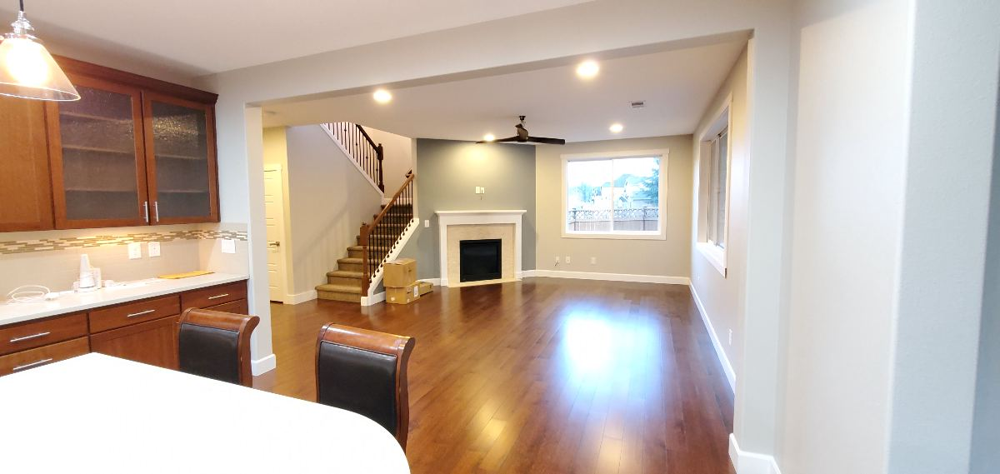
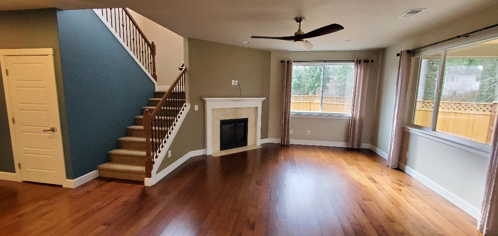
Whole-room repaint with a lighter, more cohesive palette
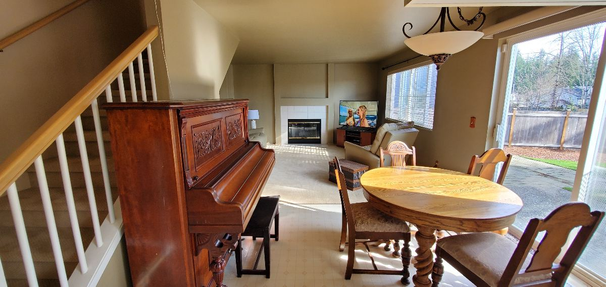
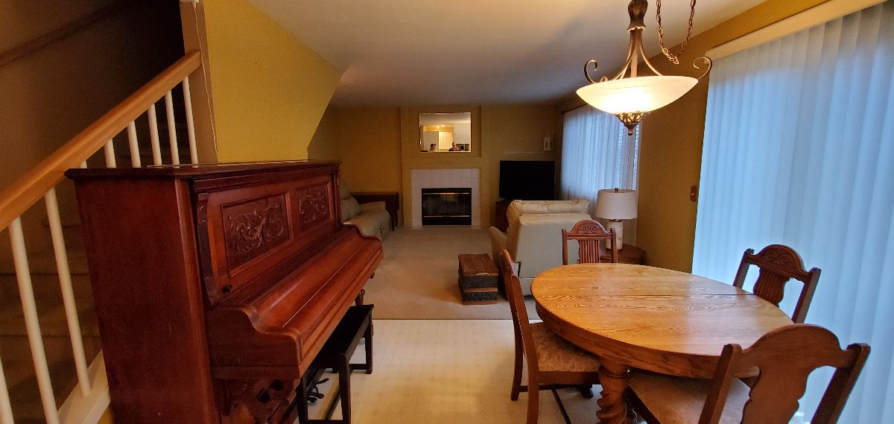
Dark upper walls with crisp architectural white
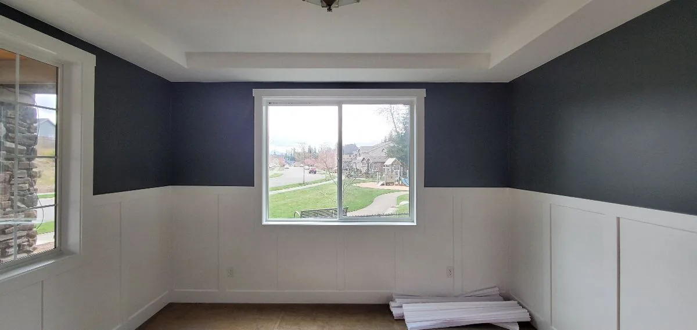
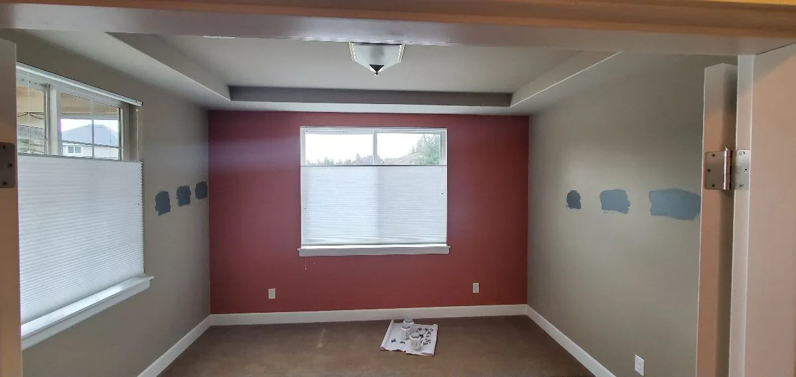
Refined neutral finish with architectural trim
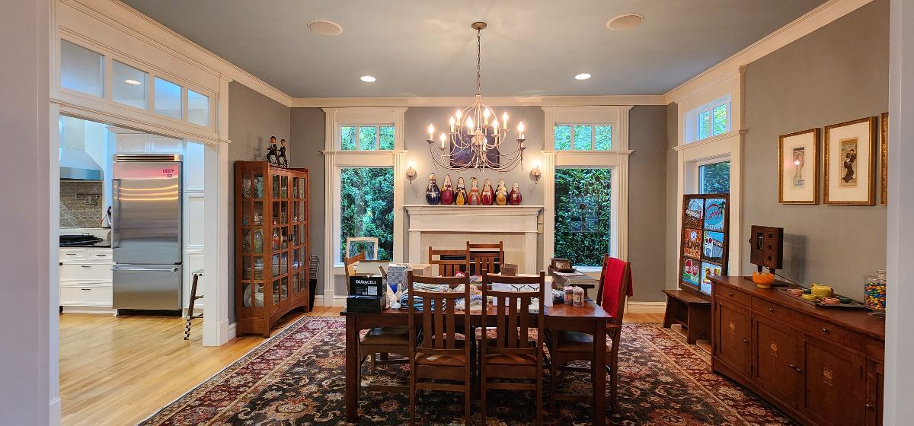
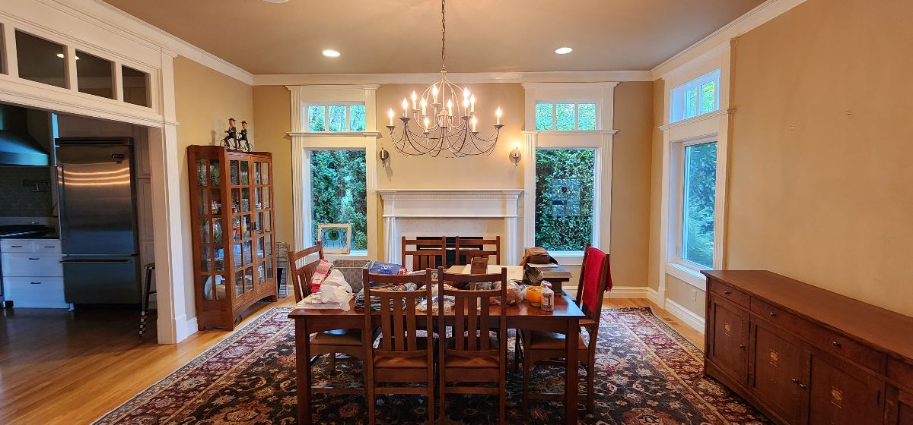
See the preparation behind the finish.
View the process gallery